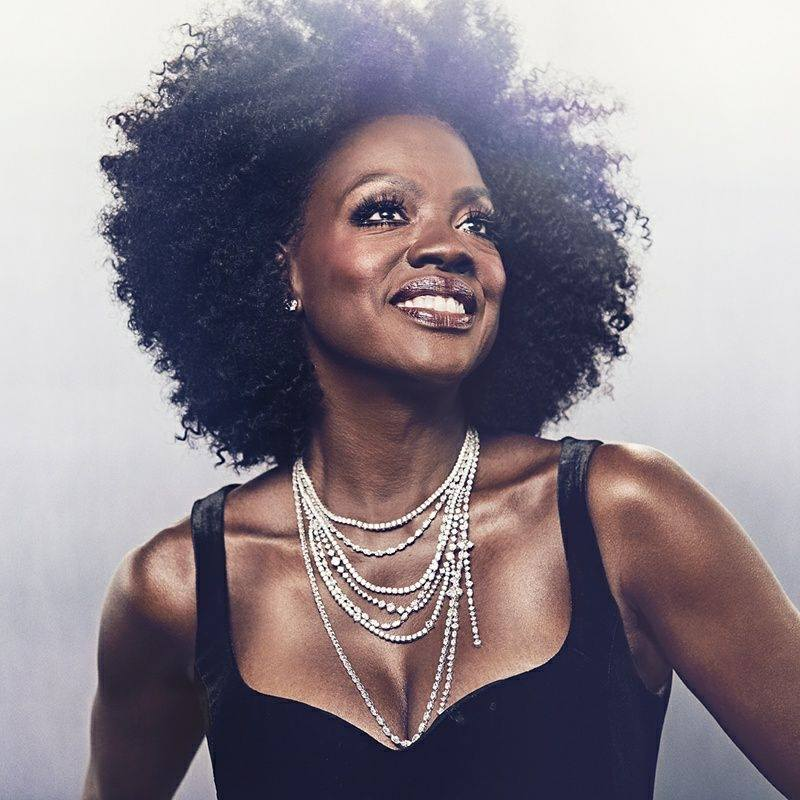

Viola Davis
Retornar para página inicial!

Sobre:
Viola Davis é uma atriz e produtora norte-americana. Vencedora de um Óscar,
um Emmy Award e dois Tony Awards, dessa forma alcançando a Tríplice Coroa da Atuação.
Foi considerada pela Time uma das 100 pessoas mais influentes do planeta em 2012 e em 2017.
Mais Informações!
Nascimento: 11 de agosto de 1965 (idade 56 anos), Setor Matthews, Carolina do Sul, EUA
Cônjuge: Julius Tennon (desde 2003)
Prêmios: Oscar de Melhor Atriz Coadjuvante, MAIS
Filhas: Genesis Tennon
Pais: Mae Alice Davis, Dan Davis
Filmes e programas de TV
Acessar Todos
Livros
Finding Me: A Memoir (2022); Corduroy: Takes a Bow (2018)